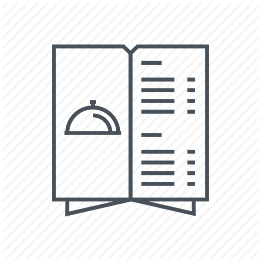

Studentski restorani u Beogradu
Osnovne informacije
Na teritoriji Beograda postoji 14 studentskih restorana. Da bi student mogao da se hrani u menzi,
mora da
poseduje studentsku karticu.
Studenti obroke mogu kupiti na blagajnama u domovima ili
restoranimaili na
infokioscima. Na blagajnama je moguce kupiti i žeton koji je potreban za escajg.
Studenti koji
su iz Beograda
mogu maksimalno da uplate 30 obroka mesecno, dok studenti koji nisu iz Beograda mogu da uplate
maksimalno
90 obroka.
Obroci se ne prenose u naredni mesec, dok se sav uplaceni novac prenosi.
Studenti mogu jesti u bilo kojoj menzi nezavisno od toga gde su obroci uplaceni.
Radnim danima
se sa jedne
kartice mogui iskoristiti maksimalno po 2 obroka istog tipa, dok vikendom to ne važi za vecere, koje
se uzimaju
u obliku lunch
paketa i može se uzeti maksimalno jedan paket sa jedne kartice.
Zakljucno sa dvadesetim u mesecu, kupuje se po 10 obroka istog tipa, a od dvadeset prvog se
obroci mogu kupovati
pojedinacno.
Klikom na dugme možete pronaći recept za pohovani kačkavalj iz 4 Aprila

Vreme obroka
| Dorucak | Rucak | Vecera | |
|---|---|---|---|
| Vreme | 7.00-9.30 | 13.00-15.00 | 17.00-20.30 |
Cene obroka
| Dorucak | Rucak | Vecera | |
|---|---|---|---|
| Budžetske | 40 | 72 | 59 |
| Ekonomske | 95 | 205 | 175 |
Klikom na sledecu fotografiju možete videti jelovnik za 2020. godinu.
Studentski restorani
-
- Studentski restoran Agronom
- Adresa: Ulica Nemanjina 6, Zemun
- Broj telefona: 011/2615-315
- Obližnji prevoz: 17, 83
-
- Studentski restoran Voždovac
- Adresa: Ulica Vojvode Stepe 320, Voždovac
- Broj telefona: 011/3995-999
- Obližnji prevoz:9, 10, 14, 33
-
- Studentski restoran Ðušina
- Adresa: Ulica Ðušina 5, Palilula
- Broj telefona: 011/3235-569
- Obližnji prevoz: 33, 40, 48, 79
-
- Studentski restoran Zemun
- Adresa: Ulica Cara Dušana 254, Zemun
- Broj telefona: 011/371-3411
- Obližnji prevoz: 17, 84
-
- Studentski restoran Karaburma
- Adresa: Ulica Mije Kovacevic 7b, Karaburma
- Broj telefona: 011/2079-737
- Obližnji prevoz: 3, 12, 25, 25p, 27, 32
-
- Studentski restoran Košutnjak
- Adresa: Ulica Blagoja Parovica 165, Cukarica
- Broj telefona: 011/3553-043
- Obližnji prevoz: 23, 53
-
- Studentski restoran Glumac
- Adresa: Ulica Bulevar umetnosti 20, Novi Beograd
- Broj telefona: 011/2135-684
- Obližnji prevoz:67, 71
-
- Studentski restoran Farmaceut
- Adresa: Ulica Vojvode Stepe 450, Voždovac
- Broj telefona: 011/3995-999
- Obližnji prevoz: 25p, 33
-
- Studentski restoran Studentski grad
- Adresa: Uliica Tošin Bunar 161, Novi Beograd
- Broj telefona: 011/3102-790
- Obližnji prevoz: 45, 65, 70, 72, 74, 75, 77
-
- Studentski restoran Rifat
- Adresa: Ulica Milana Rakica 77, Zvezdara
- Broj telefona: 01/3812-677
- Obližnji prevoz: 6, 7, 14, 28, 40, 46, 55, 77, 79, 309
-
- Studentski restoran Patris
- Adresa: Ulica Ljubice Lukovic 1, Zvezdara
- Broj telefona: 011/2076-057
- Obližnji prevoz: 65, 74
-
- Studentski restoran Obilicev venac
- Adresa: Ulica Obilicev venac 4, Stari Grad
- Broj telefona: 011/2623-321
- Obližnji prevoz: 21, 22, 22A, 26, 27E, 28, 29, 31, 41, 52
-
- Studentski restoran Mika Mitrovic
- Adresa: Ulica Kralja Vladimira 33, Voždovac
- Broj telefona: 011/3954-780
- Obližnji prevoz: 9, 10, 14, 33
-
- Studentski restoran Kralj Aleksandar I
- Adresa: Bulevar Kralja Aleksandra 75, Zvezdara
- Broj telefona: 011/3400-454
- Obližnji prevoz: 3, 5, 6, 7, 12, 13, 14, 25, 25p, 26, 27